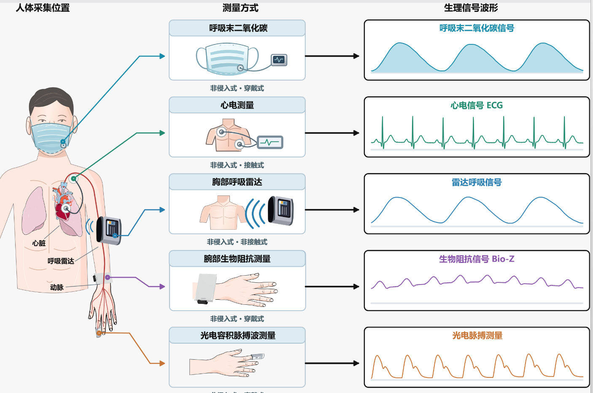

当前监测人数
20 人↑ 2较昨日同时段
实时掌握高原环境与人员健康状态，快速定位需要处置的风险。
四路传感器的佩戴位置、采集通道与当前指标。

查看全部人员的实时生理参数与风险等级。
人工智能模型融合多传感器时序特征，输出风险判定并持续校准。
指标稳定
轻度偏离基线
多指标趋势异常
高风险模式匹配
对高风险人员执行推荐方案，并记录人工确认结果。
所有异常、判断与人工处置结果均留痕可追溯。
| 时间 | 人员 | 异常类型 | 风险 | 系统判断 | 处置状态 |
|---|
集中管理危重伤员档案、救治方案与处置记录。
| 档案编号 | 人员 | 最新状态 | 更新时间 | 数据完整度 |
|---|---|---|---|---|
| CR-2026-001 | 张远P-001 · 登山突击组 | 紧急处置 | 14:32:18 | 99.2% |
| CR-2026-008 | 李强P-008 · 通信保障组 | 优先处置 | 14:26:04 | 98.7% |
| CR-2026-012 | 王磊P-012 · 火力支援组 | 常规处置 | 13:58:42 | 97.9% |
| CR-2026-019 | 何敏P-019 · 医疗保障组 | 观察中 | 13:41:27 | 96.8% |
系统根据实时生理参数自动匹配处置建议，目标响应时间不超过 15 秒。
从趋势、分布与处置效率观察整体训练风险。
配置监测规则、通知策略与演示模式。
回放公开实测样本，观察腕部阻抗、PPG、雷达呼吸与 ECG 的统一滤波结果。